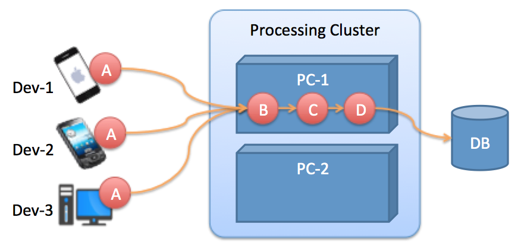

Getting Started
Introduction
In this getting started tutorial, we will introduce you with the Cube platform with a simple, but a concret scenario. We will cover the main concepts and follow a step by step tasks to get the Cube platform self-managing a distributed component-based software system wile ensuring the resilience of the managed system.
Managed System
The managed system is examplified in the following picture:

The system is composed of a set of devices (Dev-*), a set of processing machines (PC-*) and a database (DB). A special component "A" is deployed on the different devices to instantly collect particular type of data and send it to the processing machine which filter, aggregate and save the collected data on the database.
Administration Objectives
To ensure the survavibility of the system, we have more than one processing machine, but only active at a given time.
- At design-time, developers have not an idea about the running processing machines, neither the concrete implementation of the "A" component to instantiate. Hence, designing a static architecture is not a possible. The instance of the component "A" should identified at runtime depending on the type of the hosting machine, and should be connected to a another component "B" localted on any active processing machine (but only one at a time).
- When a processing machine fails, another PC of the cluster should replace it automatically. A new processing components (B, C, and D) should be created at this new machine, and all "A" components in the devices should be redirected to this new machine.
Solution
We start by identifying the elements of the system to be managed. In this cas, we have mainly three concepts:
- Nodes (PC, Devices)
- Components (A, B, C, D)
- and, Scope (Cluster of PCs)
In an archetype graph, we distinguishe between the colored rectangles and grey rectangles. Colored rectangles representes descriptions of managed elements, while the grey rectangles represents concrete values.
The left part of the graph specify a description of any component that has a type "A" and which is located on a node of type "Device". If any concret component at runtime fulfil this description, the goal "connected" should be applied. In this case, the target component on which we will connect the "A" component's instance is of type "B" and is located on a node of type "PC".
Any Component of type "B" should be conntected with another component of type "C". This last one should also be connected with another component of type "D".
Finally, all the nodes of type "PC" should be regrouped within the same scope "Cluster". All the scopes have the same "Master" instance that should be identified statically before starting the system.
Deployment and running
On each execution node (Devices, and PCs), we should install a Cube Autonomic Manager. Each Autonomic Manager has a configuration file which provides a startup configuration information that fit the local running machine.
The following XML file is the configuration file of one of the Cube Autonomic Managers controlling a device machine.
<cube>
<autonomic-manager>
<host value="localhost"/>
<port value="3840"/>
<archetypeUrl value="file:../demo.arch"/>
<extensions>
<extension id="cube.core"/>
<extension id="cube.techno1"/>
<extension id="cube.rm.monitoring"/>
</extensions>
</autonomic-manager>
</cube>Each Autonomic Manager has a basic information like its host, port, and a reference to the Archetype specification to be used. There is also a list of extensions to be used by the Autonomic Manager for specific purposes. Here, we have three extensions:
- cube.core: provides the core model concepts (Component, Node, Scope, and Master) as well as their corresponding constraints and constraint resolvers (connected, onNode, inScope, etc).
- cube.techno1: provides a monitoring and actuating interface with the concret "A"'s component instance technology on the controlled machine. For each other machine, we should use its corresponding extension.
- cube.rm.monitoring: provides a graphical real-time view of the "Runtime Model" of the Autonomic Manager.
Tests
- Download the demo package here
- This package contain the following content:
+ cube-demo - demo.arch + master + dev1 + dev2 + dev3 + pc1 + pc2 - The unzipped file contain one directory called "cube-demo". This directory containts one file "demo.arch" which is the archetype file for this example, and a set of directories containing each a Cube Autonomic Manager.
- Start the master Autonomic Manager
- Start the other Autonomic Managers with any order from different terminals
- The opened windows are the graphical Runtime Model monitoring exetension specified on each Autonomic Manager. You will see that the application is correctly created
- try to stop the pc containing the B, C, and D components. You notice that Cube creates the part of the application in another PC to maintain the application's architecture correcte (as specified in the archetype)

|

|

|

|